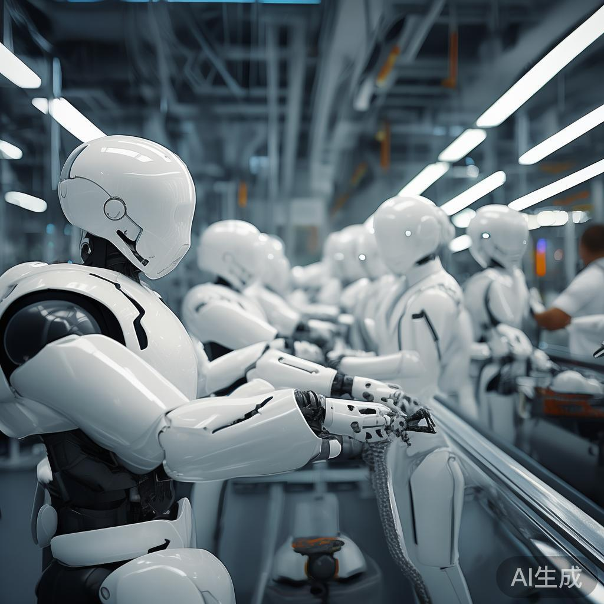
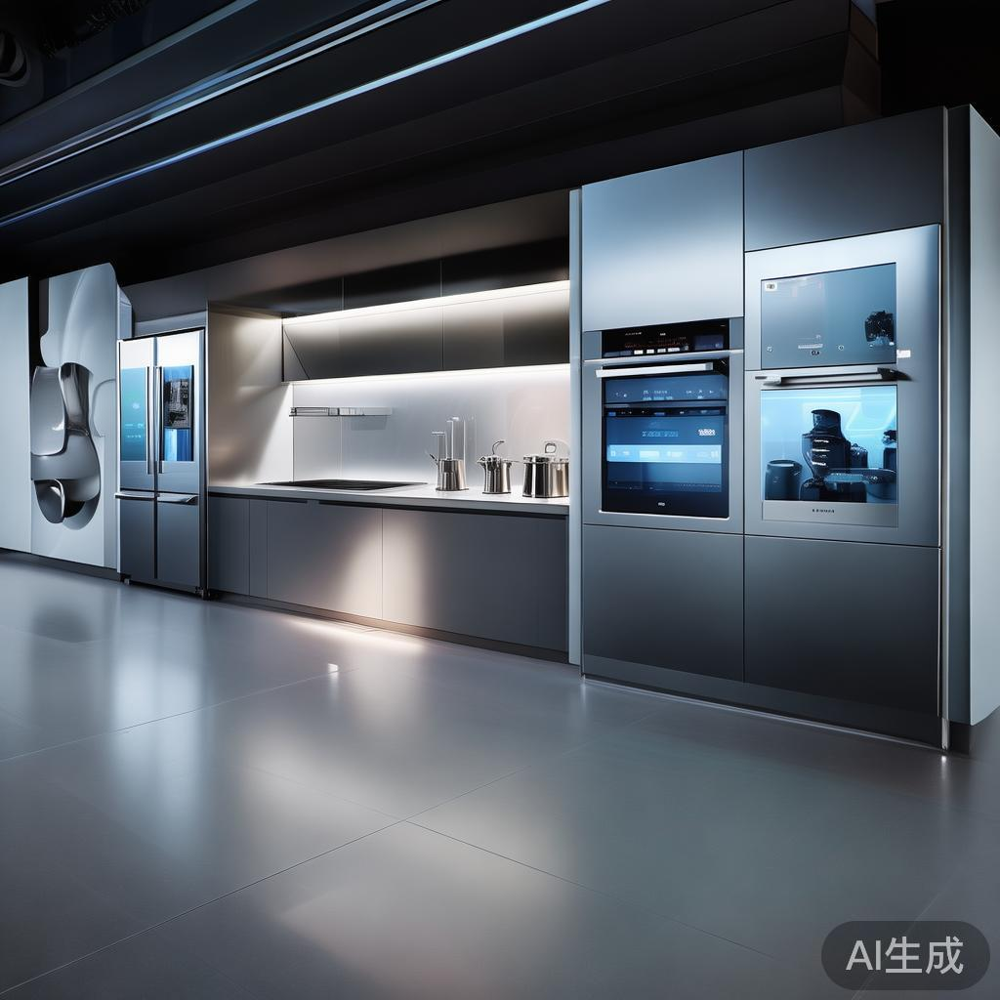
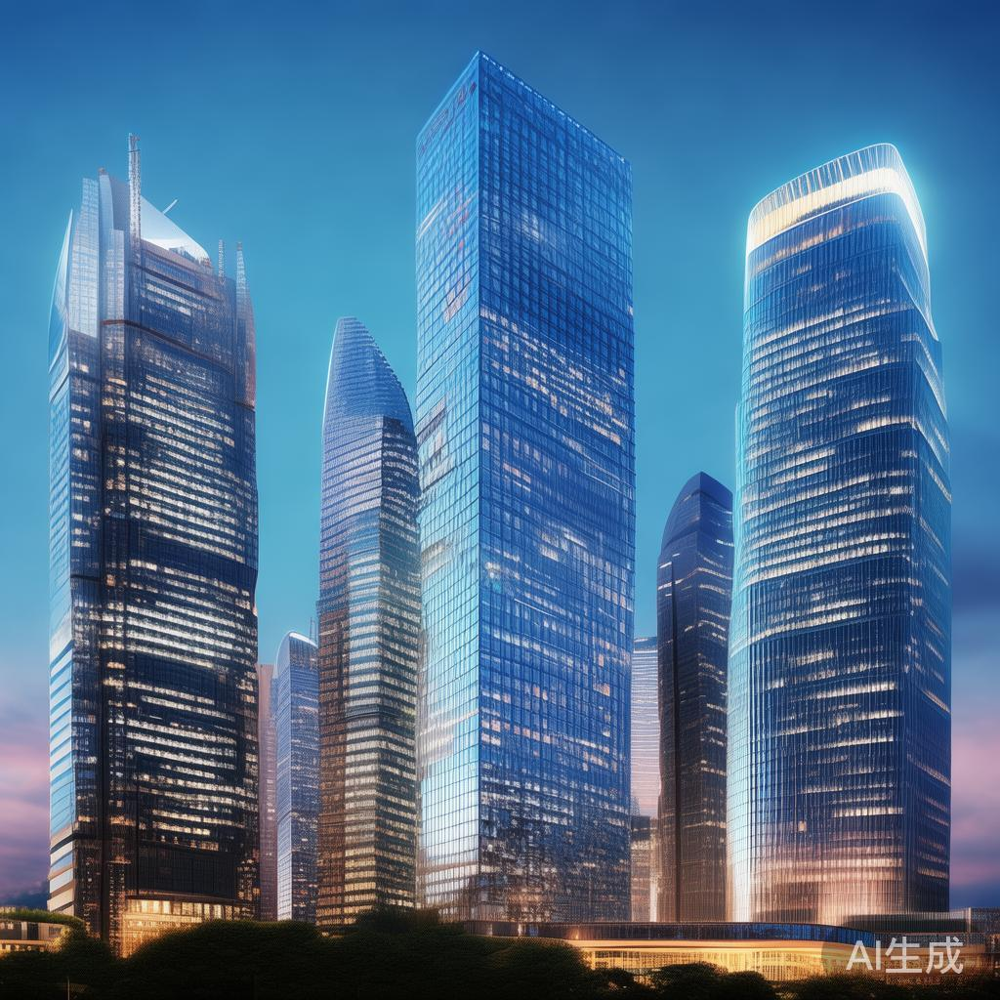
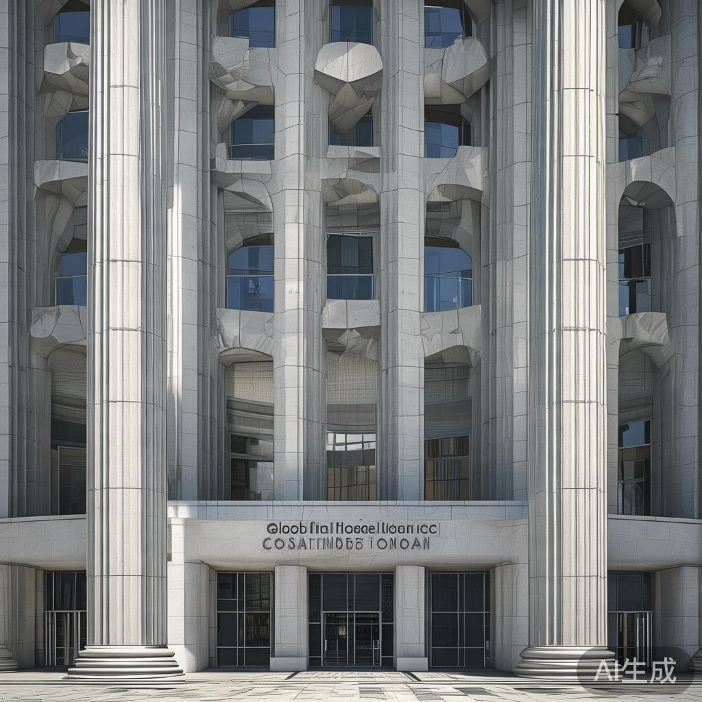
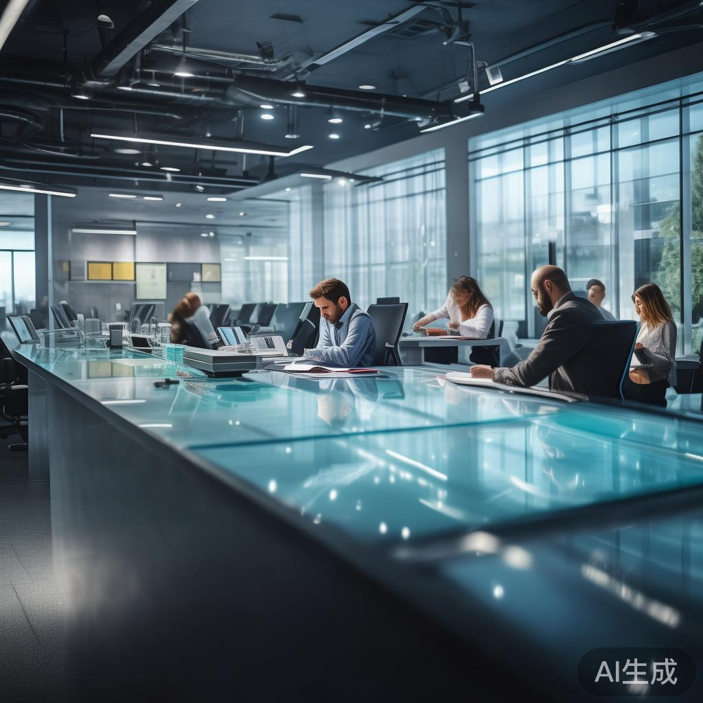

01
中美举行第六轮经贸磋商 聚焦关税与供应链合作
8月7日，中美经贸中方牵头人何立峰与美国财政部长贝森特、贸易代表格里尔举行视频通话，这是继7月30日会谈后的最新一轮磋商。双方围绕关税调整、供应链稳定以及科技领域合作等议题展开讨论，释放出积极信号。市场分析认为，此次会谈为即将举行的G20财长会议奠定基础，有望缓解近期紧张的贸易氛围。
国际
8月7日，中美经贸中方牵头人何立峰与美国财政部长贝森特、贸易代表格里尔举行视频通话，这是继7月30日会谈后的最新一轮磋商。双方围绕关税调整、供应链稳定以及科技领域合作等议题展开讨论，释放出积极信号。市场分析认为，此次会谈为即将举行的G20财长会议奠定基础，有望缓解近期紧张的贸易氛围。
彭博社8月4日报道指出，中国人工智能领域正以惊人的速度追赶硅谷。在过去八周内，中国先后发布五款AI大模型，包括DeepSeek V4-Flash、智谱GLM-5.2等。Artificial Analysis基准测试显示，DeepSeek V4-Flash的智能指数达到50分，与谷歌Gemini 3.6 Flash持平。分析人士认为，中国已经形成可复制的AI生产系统，对全球AI竞争格局产生深远影响。
据南华早报报道，美国总统特朗普8月5日公开指责中国助长了美国国内日益高涨的反对AI数据中心建设的浪潮。近几个月来，多个州相继出现针对AI数据中心建设项目的抗议活动，居民担忧电力消耗、用水量以及环境污染问题。这场反AI浪潮正成为美国国内政治的新热点话题，可能影响后续AI基础设施投资计划。
人工智能分析机构Artificial Analysis最新报告显示，DeepSeek最新发布的V4-Flash模型在智能指数基准测试中获得50分（满分100），这一成绩与谷歌Gemini 3.6 Flash持平，仅落后Meta的Muse Spark 1.1与智谱GLM-5.2一分。V4-Flash以更小参数实现了接近顶级闭源模型的性能，引发业界对开源AI发展前景的广泛讨论。
8月6日，山西焦煤能源集团股份有限公司发布公告，公司所属西曲矿于8月5日发生一起安全生产事故，造成一人遇难。事故发生后，西曲矿立即停产整顿，相关政府部门正在开展事故调查认定工作。这是该矿复产不到一周内再次停产，引发市场对煤炭企业安全生产管理的关注。

2026年上半年，特斯拉正式拆除弗里蒙特工厂原有的Model S/X生产线，全面安装首代Optimus人形机器人生产线。这一战略调整标志着特斯拉从电动车制造商向AI机器人公司的深度转型。业内观察认为，Optimus产线投产后，特斯拉将形成全新的业务增长极，并引领全球人形机器人产业化进程。

近日，知名家电品牌苏泊尔推出的AI生成广告因内容失当引发广泛争议。广告中部分场景引发消费者强烈反感。事件反映出AI广告虽能大幅降低制作成本，但由于审核流程简化、人机校验环节缺位等问题，AI广告翻车几率显著上升，监管部门与品牌方亟需建立更严格的AI内容审查机制。
第一财经最新股市分析指出，A股市场近期表现强势，多个板块轮番上涨，市场情绪明显回暖。分析师认为，本轮行情由多重因素共同驱动：宏观经济数据企稳回升、利好政策密集出台、外资持续流入。技术面上，指数已突破多个关键阻力位，成交量放大显示增量资金正在入场，新一轮上涨行情有望延续。
苏州警方近日对恒久科技实际控制人余荣清采取刑事拘留措施，公司股价应声大跌。资料显示，余荣清曾任三菱信息电子公司首席工程师，2002年创办恒久科技，2016年8月公司登陆深交所。上市10年间，恒久科技连续7年亏损，从曾经的苏州标杆企业一步步走向退市边缘，引发市场对企业治理与监管的深刻反思。
据ABC News报道，中国高层领导人近期陆续抵达北戴河，启动一年一度的夏季闭门会议。北戴河会议历来是中国最高层进行非正式交流、讨论重大政策议题的重要场合。会议期间将讨论国内外重要政策方向、经济形势以及人事安排等议题，会议成果将对下半年中国政策走向产生重要影响。
21财经发布的最新全球央行月报显示，随着经济数据起伏不定，市场对全球降息周期的预期再度升温。多国央行已开始释放鸽派信号，市场押注主要经济体将在2026年下半年开启新一轮降息周期。报告指出，货币政策分化将影响全球资本流动格局，新兴市场有望迎来资金回流机会，但同时需警惕汇率波动风险。

联合早报最新报道指出，亚细安地区经济前景整体稳健。马来亚银行仅将亚细安六国2026年经济增长预测较此前下调0.1个百分点至4.7%，整体展望变化不大。AI热潮为区域经济注入新动能，数字经济与绿色经济成为新的增长引擎。美伊冲突等地缘政治事件对区域经济影响有限，亚细安一体化进程持续推进。

中国银行研究院近日发布《2026年经济金融展望报告》以及《2026年第3季度经济金融展望报告》，对国内外宏观经济形势与金融市场走势进行系统分析。报告指出，中国经济运行总体回升向好，高质量发展扎实推进，但仍需关注外部环境复杂性与内需恢复不均衡等挑战。报告为政府部门、企业投资决策提供重要参考。
观察者网报道显示，过去八周中国先后发布五款AI大模型，被业内称为AI模型周更。这种高频率、高质量的产出表明中国已经形成可复制的AI生产体系，涵盖数据准备、模型训练、推理部署、评测发布等完整链路。分析人士认为，这一体系化能力将使中国在全球AI竞赛中保持长期竞争力，并对国际AI治理格局产生重要影响。
据新浪财经披露，包括宇树科技、高凯技术在内的多家中国机器人与硬科技公司正在冲刺科创板IPO。宇树科技作为中国人形机器人领军企业，凭借在足式机器人领域的深厚积累获得资本市场高度关注。此轮IPO潮将为中国机器人产业注入大量资金，加速产业化进程，预计下半年将有更多相关企业登陆资本市场。
著名互联网分析师Mary Meeker近日发布长达340页的2025年AI趋势报告，全面分析全球AI产业发展态势。报告显示，AI在MMLU等关键基准测试上的准确率已达92.3%，超越人类基准89.8%。报告涵盖AI性能里程碑、产业化进展、投资趋势、监管动态等多个维度，被视为AI行业最具权威性的趋势分析报告之一。
PrimeIntellect近日开源Prime Agent项目，这是一个基于Pi的自我进化强化语言模型持续运行Harness框架。Prime Agent可应用于代码工作流以及长时运行的自主任务，引发AI开发者社区广泛关注。项目发布后迅速登上LINUX DO等社区热门榜单，被认为代表了AI Agent技术的最新发展方向。
针对近日网传深圳地面沉降致车辆损坏事件，深圳市相关部门迅速回应并启动全面排查工作。事件引发市民对城市基础设施安全的关注。官方表示将组织专业地质队伍对事发区域及周边进行全面检测，评估地质稳定性，并及时公布调查结果。此事件也提醒各城市加强基础设施日常巡检与预警机制建设。

日本政府近期宣布大幅提高外国居民永久居留申请的门槛，对申请者的收入、纳税记录、社会贡献等指标提出更严格要求。这一政策调整被视为日本移民政策从规模扩张向质量优先的重要转向。日本希望通过提高门槛吸引真正的高端技术人才与专业人才，同时加强对外国居民的社会融入要求。
中美洲国家危地马拉近日正式宣布进入国家灾难状态，以应对热带风暴Julia带来的严重影响。强降雨引发山洪、泥石流等次生灾害，已造成多人伤亡，大量居民被迫转移。政府部门正全力开展救援工作，国际救援组织也紧急驰援。气候变化背景下，中美洲国家面临的极端天气挑战日益严峻，亟需国际社会更多关注与援助。